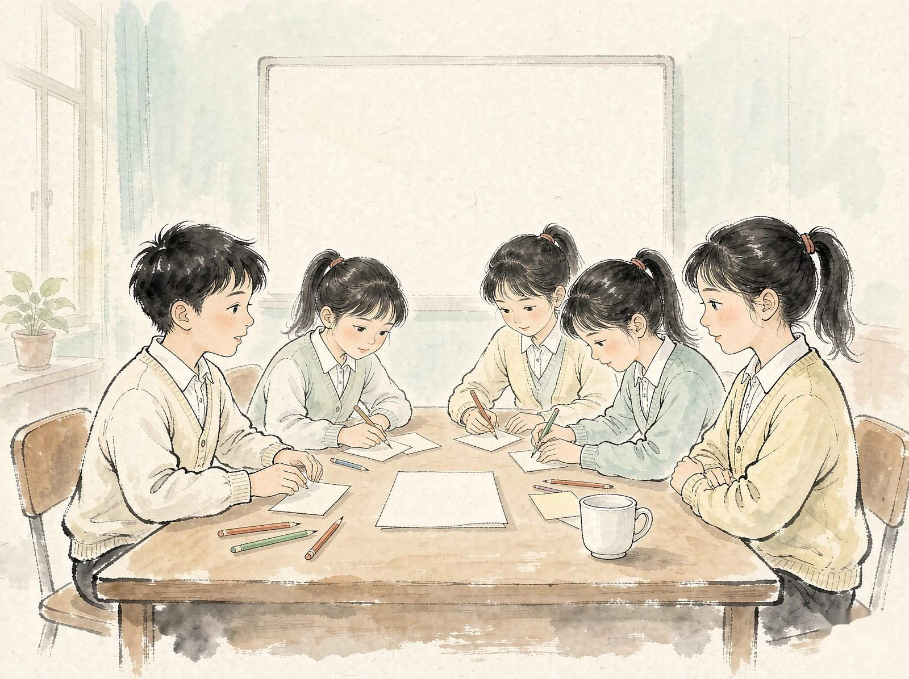

论语者，二十篇。群弟子，记善言。
《论语》，是孔子和弟子们对话的记录，一共二十篇。
不是夫子预先写好的长篇文章，是有人提问，夫子随机点拨。
每一段对话，都对应当时的人和事，不能单独抽一句话，随便套在所有场景里。
文字是载体，里面藏着“仁”的本心，我们读的时候，要体会这份存心，而不只是背句子。

《论语》里面的话，不是孔子提前写好的文章。
是一众弟子，跟着夫子求学，听见夫子开导的善言，心里有所触动，就记录下来，慢慢汇编成二十篇。
善言，是对症的提点，不是死板的规矩。
言语用来启发我们的本心，听完、读懂之后，还要回到自己身上省察践行。

落到心上理解
承接上一课存疑：四书内部以《大学》为入德之门，而蒙学多先读《论语》。
《大学》是纲领框架，立明德止至善的总轨道；《论语》是落在日用、人事、问答里的活示范。框架先立，再看无数应机问答，义理才不会僵死。
二十篇只是编辑归类，不必执着篇次有秘传次序；但也不可轻视文本脉络，断章取义。依文入观，体会忠恕仁心，得意而不执言语篇章，即是无住。
另有一问：问答之语，本身就带着应机属性。
弟子记录之时，已经以自己的领会做取舍，文本不是镜面一样无差别的复刻。所以我们读《论语》，既要尊重记录下来的文辞，做训诂句读的考证；又要明白，文字只是路标，要顺着路标去体会夫子当下的本心，而不是死守字句。
善言可贵，贵在能破当下的迷惑；时移境迁，同样一句话，未必还适合直接照搬。得意忘言，便是无住。
摘句割裂，脱离语境，当作现成格言使用；视善言为永恒不变的教条，直接照搬套用
通读篇章、体察问答机缘，领会应机施教的仁心；善言是应机解惑的提点，随因缘而显，重在领会仁心
- 《论语》是孔子弟子辑录的师生问答，全书分为二十篇。
- 属于四书之一，文辞亲切，多是对机点拨，不是刻板论文。
- 读《论语》忌断章取义，要看懂当时问答的背景。
- 篇章文字是舟筏，最终要回归自身的仁心、自省与践行。
- 《论语》是众多弟子、后学，记录孔子的善言汇编而成。
- 善言，是契合仁道、解开当下困惑的教诲，不是浮华言辞。
- 记录承载教化，但记录不等于本心本身。
- 读善言，重在向内省察，而不是把句子当成不变的铁律。
一、勘俗见。文脉正式开启四书分释。厘清《论语》成书性质：语录汇编，应机而发。重点破除“一句放四海皆准”的摘句思维。补全《论语》成书脉络，纠正“孔子写了论语”这个常见误会。同时区分：善言的价值在启发，不是万能公式。
二、现代对照。类似前辈长者的谈话记录，每一段回答，都针对特定人的困惑。换一个人、换一个处境，教法也会不同。如同听课笔记。再好的笔记，也只是老师讲解的转述，笔记不等于老师当下全部的心意，阅读笔记要还原场景、体会本意。
三、承接常变主线。篇目分章、版本异文可以校订调整（可变之相）；以仁恕自省、以诚待人的核心宗旨不变（常）。文字传抄、版本字句会在流传中发生变动（可变之相）；善言启发人回归仁心自省的教化内核不变（常）。
四、承接教与学二分。师长讲解时还原问答场景，属于施教一侧；学习者读句反观自身，不拿字句去苛责他人，是自主修习。师长传递善言、启发觉知，属于施教一侧；学人听闻记录、反躬自省，是自主修习。
承接选择力练习：读论语，察机缘、明本心，善用章句而不被单句束缚。
论语者，二十篇。群弟子，记善言
一字义与句读
论（lún），论纂、编排次第；语，言语答问。弟子相与辑而论纂，故称《论语》，凡二十篇。
上句释义：《论语》这部典籍，由孔门弟子、再传弟子汇集夫子应答教诲之语，编排为二十篇，是四书之中极重要的一部。
群弟子，孔门及门弟子、再传后学；善言，善化之言，契合仁道、对治迷情的教诲。
下句释义：《论语》所载，出自一众弟子，亲闻夫子教诲之后，记录下这些应机启悟的善言，汇集成书，传之后世。
二命题考辨
（1）四书阅读次序的两种传统
宋儒定四书次第：《大学》→《论语》→《孟子》→《中庸》。以《大学》立规模，再以《论语》见日用功夫。
蒙学诵读，常先取《论语》：长短错落、故事问答丰富，门槛更低，适合初学。二者并不冲突：先立格局，再看活的践履示范。
二十篇，是后世整理归类，并非孔子预设的写作大纲。每篇篇题，只是取开篇二三字，不代表全篇总主旨，这也是读此书容易忽略的要点。
（2）对照当下现代语境
当下网络上大量《论语》解读，最大弊病就是断章取义，脱离问答语境，改造为心灵鸡汤或者权谋口诀。
“论语者，二十篇”一句，暗含提醒：它是一部对话集。义理不是悬浮的公理，是面对具体人、具体困惑的对症开示。离开对象与场景，道理就容易僵化。
今天很多人读经典，有两种极端：一种是文本原教旨，一字不可疑；一种是随意发挥，脱离原文空谈感悟。
“群弟子，记善言”给出中道：文本是弟子传承的记录，值得严谨考据；记录是中转，不是本源，义理体悟不能困死在文字里。
（3）般若范式互参
篇章、问答、文字言说，都是教化假名。
善言、笔录、简册文本，全是因缘假名。
联动三才五蕴太极空杯模型：仁心自性如杯中空性，本自一如；问答言语、二十篇文字，如同因缘显现的种种影像，用来指引人返归空性本心。影像不是虚空，借影像可以识虚空，不可执影像为虚空。仁心自性如同杯中之空，本自圆满；善言如同指点虚空的手指，弟子记录，是把手指的样貌留存下来。指不是月，借指望月，不可执指为月。
呼应“本乎数”：二十为偶数，两两相对，一问一答，阴阳相感，显发仁道。群为多，记为存，一多相摄，众缘汇聚，方有典籍流传。
延伸义理：
《金刚经》：无有定法可说。孔子也无固定一套死法，随弟子根器差别而答，与般若“应机说法”同构。如来有所说法耶？无有定法如来可说。孔子善言，同样无定法，因人而说。
《道德经》：善行无辙迹。夫子应答，也是随方解缚，不留下固定教条的桎梏。希言自然。夫子不多言，只在当惑之时出善言，正是不多言而契自然。
《坛经》：惠能随机开示，和《论语》杏坛问答，同为对机施教，不落定相。经诵三千部，曹溪一句亡。善言舟筏，渡己即舍。
（4）言说、听闻、笔录的三重边界
夫子无心著书，只是随缘开示；弟子有心记录，是为了不忘所学、利益后来者。
这里有一层很关键的边界：言说有局限，听闻有取舍，笔录有偏差。
这不是否定文本价值，而是建立一种审慎的读法：训诂校勘，是尽量贴近当时语境；义理参悟，是超越文字，直探仁体。
刚好回应上一问：为什么本心具足，仍要听闻善言？因为习气覆蔽，需要善言作为外缘敲破迷局，善言是助缘，不是本心本身。
三跨典互参（老庄、般若对照）
· 《道德经》：上善若水，水善利万物而不争。孔子因材施教，如水随器，正是此意。言者不知，知者不言。夫子不得已而言善言，弟子不得已而记录，知不在言。
· 《庄子》寓言重言，也是借言语破执；《论语》用真人实事问答，温和切近，路径不同，皆为导人返本。：《庄子》寓言重言，也是借言语破执；《论语》用真人实事问答，温和切近，路径不同，皆为导人返本。
· 串联前文：自天地万物、七情八音、九族五伦十义建立人伦之本；转入教化讲究、训诂句读，确立治学次第；由小学升阶四书；至此，正式进入四书首部《论语》的研读，以问答启仁心。自天地万物、七情八音、九族五伦十义立本心；转入教化讲究、训诂句读，建立治学次第；由小学升阶四书；入《论语》，先明篇目，再明成书缘起——善言由夫子而发，由弟子笔录传承。
· 《庄子》：言之所以在意，得意而忘言。弟子记言，为存其意。
四和前面课程的张力
次第链条：……→ 小学终，至四书 → 论语者，二十篇 → 群弟子，记善言
呼应“人不学，不知义”：《论语》就是义理在人事问答里的活显现；善言就是义理的活载体，由记录得以流传；
呼应“玉不琢，不成器”：借夫子的提点，打磨自身习气，涵养仁心；善言是打磨习气的工具；
呼应“教之道，贵以专”：专一在“仁”这个核心上体会，不沉迷搜罗故事、考据闲话。专于领会仁心，不在字句考据上向外追逐见闻。
五1. 《论语》二十篇，篇与篇之间有无内在的递进脉络，还是单纯零散问答汇编？
2. 同样一句教诲，对甲可行，对乙不可行，如何把握“应机”的边界，而不是随意曲解经典？
3. 仁是本心，为何还需要依靠问答、听闻、学习才能显发？
4. 弟子记录时，取舍的标准是什么，是以自己的理解为准，还是夫子有统一的准则？
5. 同样一句善言，历经多代传抄，字句流变，我们以什么为核心标尺校读？
6. 善言重在对机，后世没有夫子当面答疑，如何避免错解、误用？